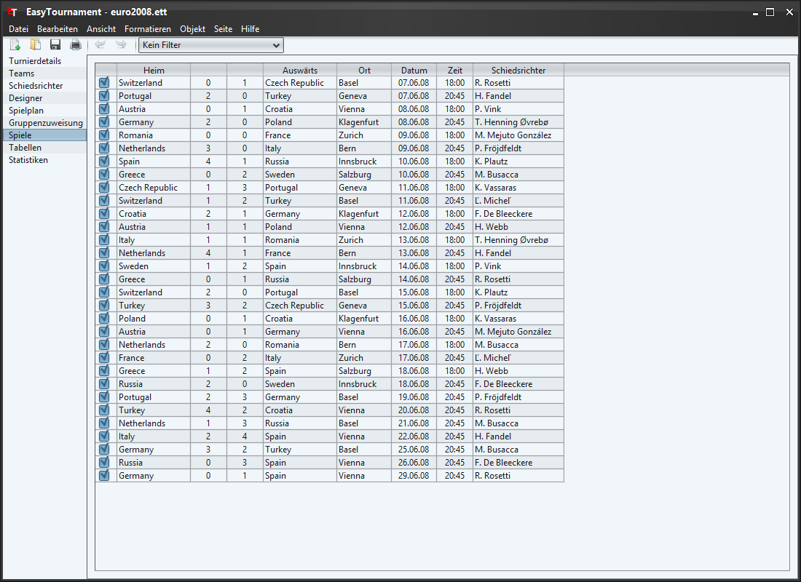
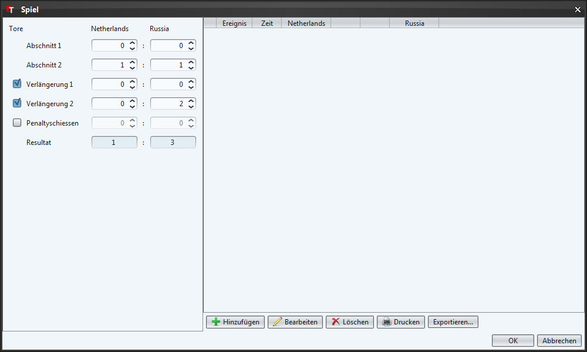
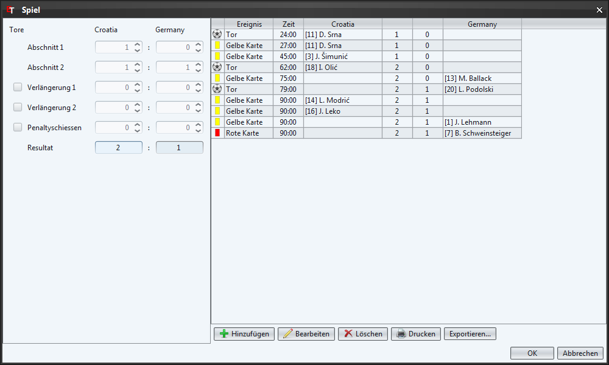
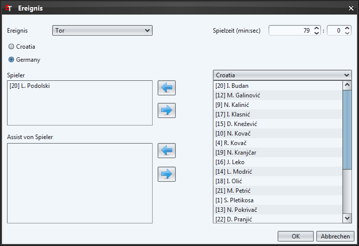

Diese Tabelle entspricht derjenigen der Rubrik "Spielplan" abgesehen davon, dass hier die Team-Namen anstelle der Positionen stehen und 2 Resultatspalten hinzugekommen sind.
Die Tabelle wird nach dem Datum und der Zeit sortiert.
Mit dem Häkchen in der ersten Spalte kann eingestellt werden ob ein Spiel bereits gespielt wurde oder nicht.
Schiedsrichter können nur ausgewählt werden, wenn sie diese unter der Rubrik Schiedsrichter erfasst haben. Möchten sie die Schiedsrichter nicht erfassen und diese Spalte ausblenden, dann können sie dies in den Einstellungen machen.
Es gibt 3 verschiedene Varianten ein Resultat zu erfassen:
Dazu klicken sie eifach in die jeweilige Resultat-Zelle und geben die Zahl ein.
Dies ist die einfachste Variante, hat aber den Nachteil, dass nur die Team-Tor-Statistik augewertet werden kann.
Mit einem Doppelklick oder über das Kontextmenü "Spiel bearbeiten" (rechte Maustaste) öffnet sich der Spieldialog (siehe Bild).

Auf der linken Seite können nun jeweils die Zwischenresultate erfasst werden. Das Gesamttotal wird automatisch berechnet. Falls es zu einer Verlängerung oder einem Penaltyschiessen kommt, klicken sie in das kleine Quadrat ganz links so dass ein Häkchen erscheint.
Auch in diesem Verfahren sind nur sehr beschränkt Statistiken möglich.
Dies ist die aufwendigste Variante, bietet aber viele Möglichkeiten das Turnier statistisch auszuwerten.
Mit einem Doppelklick oder über das Kontextmenü "Spiel bearbeiten" (rechte Maustaste) öffnet sich der Spieldialog (siehe Bild).

Auf der rechten Seite können nun entweder über die Schaltfläche "Hinzufügen" oder über das Kontextmenü neue Spielereignisse erfasst werden (siehe Bild).

Als erstes wählen sie hier eines der Ereignisse, welche sie unter Spielereignisse erfasst haben. Danach erfassen Sie die Spielzeit in welcher das Ereignis stattgefunden hat (Achtung: Ereignisse welche in der Nachspielzeit stattgefunden haben, müssen auf die letzte Minute der Spielzeit datiert werden, weil sie sonst der falschen Spielzeit zugeordnet werden (z.B. Ein Tor in der 45+1 Minute der ersten Halbzeit im Fussball muss in der 45 Minute mit 0 Sekunden erfasst werden).
Als nächstes wält man das Team für welches das Ereignis gilt (z.B. Das Team, dass ein Tor geschossen oder eine gelbe Karte gekriegt hat). Nun können die verantwortlichen Spieler mit den Pfeilschaltflächen oder mittels Drag & Drop verschoben werden.
Falls Spieler X vom Team A ein Eigentor schiesst, wird dies wie folgt erfasst: Ereignis: Tor, Team: Team B, Spieler: X von Team A
Mit einem Doppelklick auf das Ereignis, mit der Schaltfläche "Bearbeiten" oder über das Kontextmenü (rechte Maustaste) lässt sich ein Ereignis bearbeiten.
Die Spiel-Tabelle lässt sich als CSV (z.B. für Tabellenverarbeitungsprogramme wie MS Excel) oder als HTML Datei exportieren. Dazu wählen sie das Menü "Datei"->"Exportieren..." und im sich öffnenden Dialog den Eintrag "Resultate".
Im Speichern-Dialog (siehe nächste Bild) können sie nun den gewünschten Dateityp auswählen.
Falls sie die Variante mit dem Spielbericht gewählt haben, lässt sich auch dieser als CSV oder HTML Datei exportieren.